Two colours, split along the car's shoulder line, the way Maybach does it: midnight green metallic flake on top, travertine sand below. Garden over stone, which is literally what SDLR builds. No graphic. The doors carry the quiet v10 stack, cut from the same green film; a small gold monogram sits on the green shoulder of each rear quarter; and the liftgate is lettered like a yacht's stern: the SDLR monogram large, SAN DIEGO beneath it as the home port. The car in these images is Gio's own 2025 Juniper Model Y.
Photo-style images made with Magnific (AI, Nano Banana Pro). They are concept images, not photos of the wrapped car. The side and rear images were made from Gio's own photos of his car. On the side image the AI misspelled the website and licence number and drew its own badge, so the door lettering and the badge were replaced with the exact artwork at true size; on the rear the plate was painted blank. Every word was proofread letter by letter.
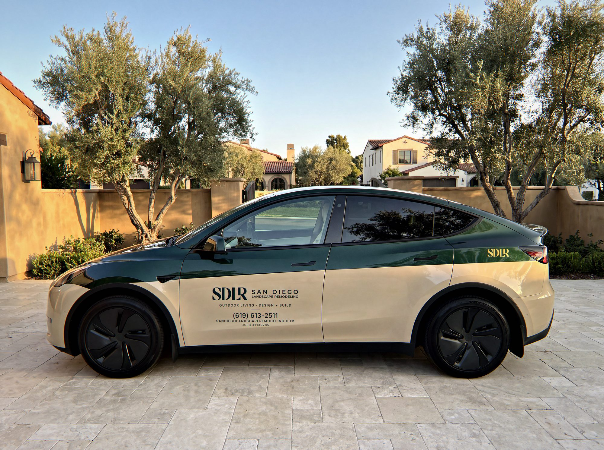
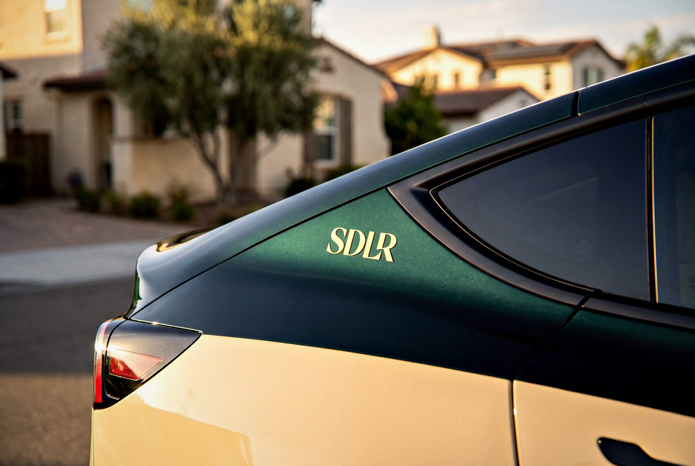
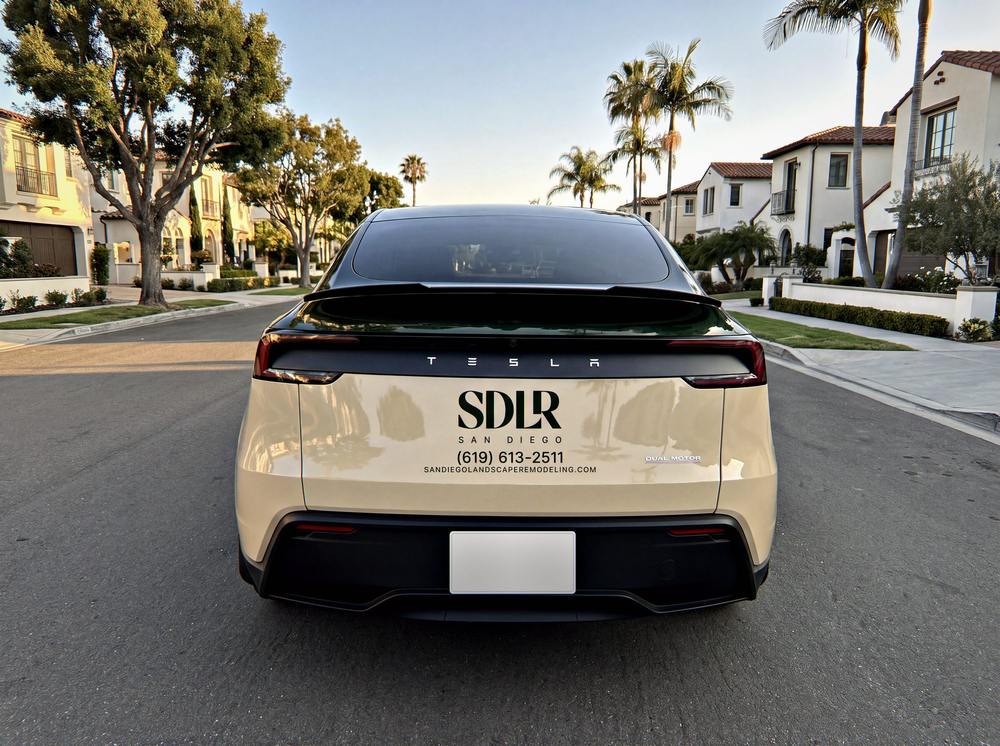
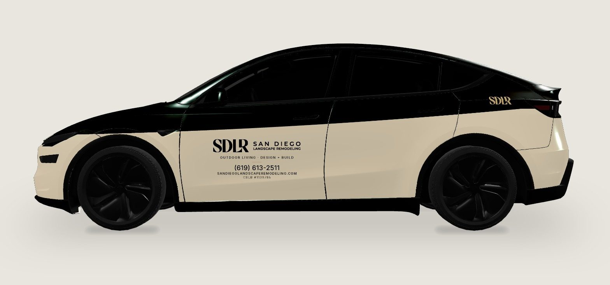
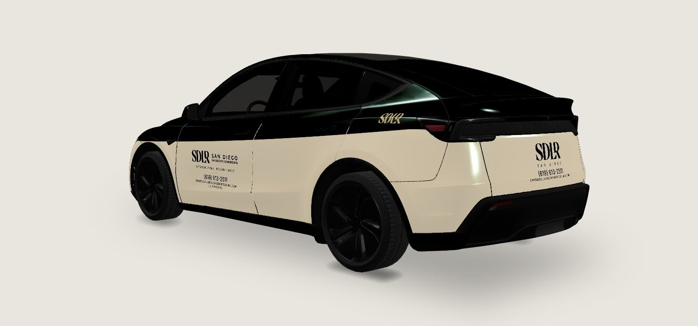
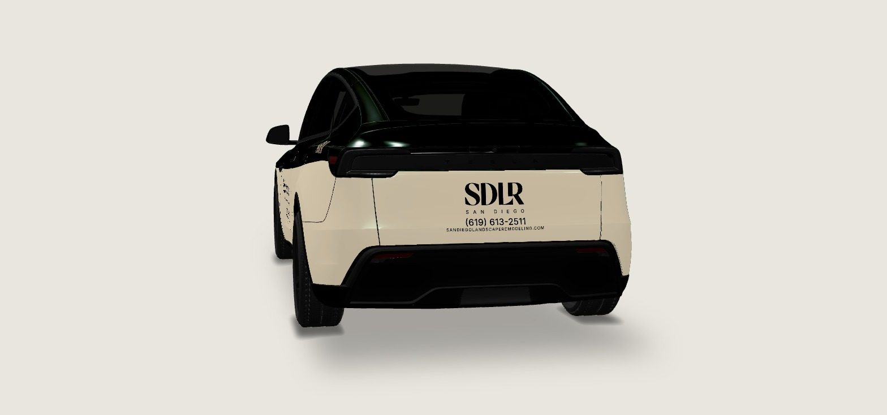
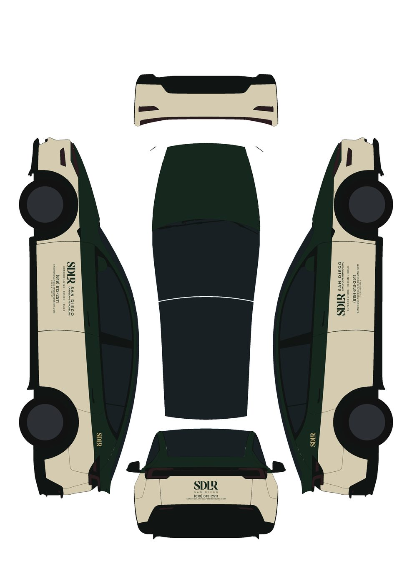
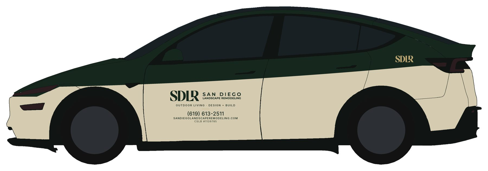
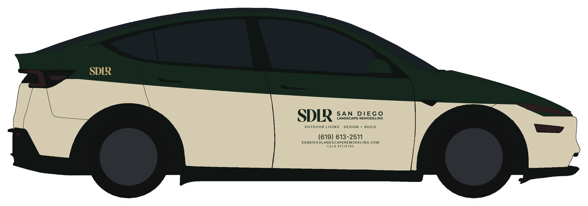
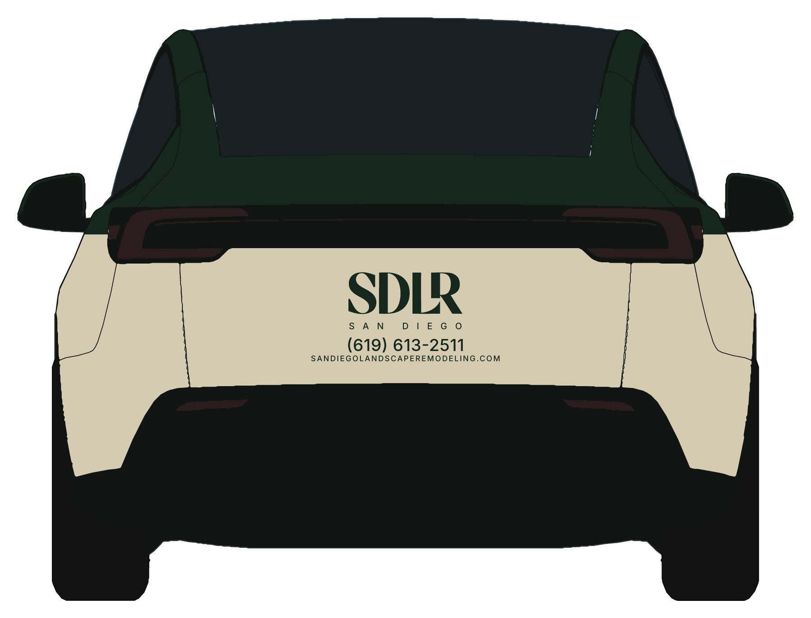
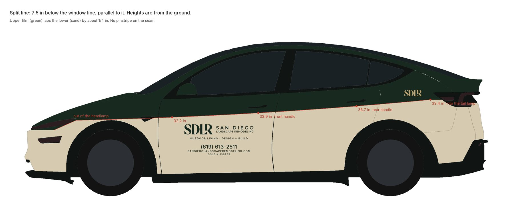
| Car | 2025 Tesla Model Y Premium AWD, the new Juniper body, with black 19 in aero wheel covers |
| Upper | Midnight green metallic colour-change film with real flake (samples: TeckWrap HM07 Green Black, Inozetek MSG023 Metallic Midnight Green): hood, A-pillars, mirror caps, the shoulder band under the windows, upper liftgate |
| Lower | Travertine sand colour-change film (gloss candidate: Inozetek Super Gloss Sand SG005; a satin sand from 3M, Avery or Hexis to sample beside it): doors and quarters below the shoulder, both bumpers, lower liftgate |
| The split | Runs 7.5 in below the window line and parallel to it (about 34 in up at the front door handle, 37 in at the rear handle), out of the headlamp and into the tail lamp; across the rear it follows the light bar, across the front the hood edge. The green laps the sand by about a quarter inch; no pinstripe. |
| Front doors | Centred, all in the green film: SDLR horizontal lockup 28 in · OUTDOOR LIVING · DESIGN + BUILD · short rule · (619) 613-2511 (1.5 in) · SANDIEGOLANDSCAPEREMODELING.COM · CSLB #1139785 |
| Rear quarters | SDLR monogram badge, gold metallic vinyl, 2.6 in tall, on the green shoulder |
| Liftgate | Yacht stern, in the green film: SDLR monogram 12.3 in wide (4.5 in tall), SAN DIEGO beneath it, then (619) 613-2511 and the website, under the light bar |
| Rear glass | Clean: no vinyl |
Working files (layered .ai, print PDF at 1:10, proof PDF, README) live in Drive:
02 Clients/san-diego-landscape-remodeling/Vehicle/wrap-design/2026-11-22-v11/ (every earlier version kept beside it)